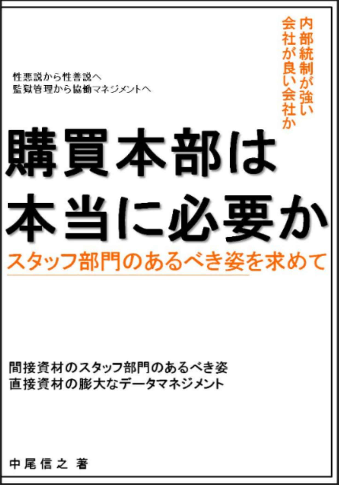
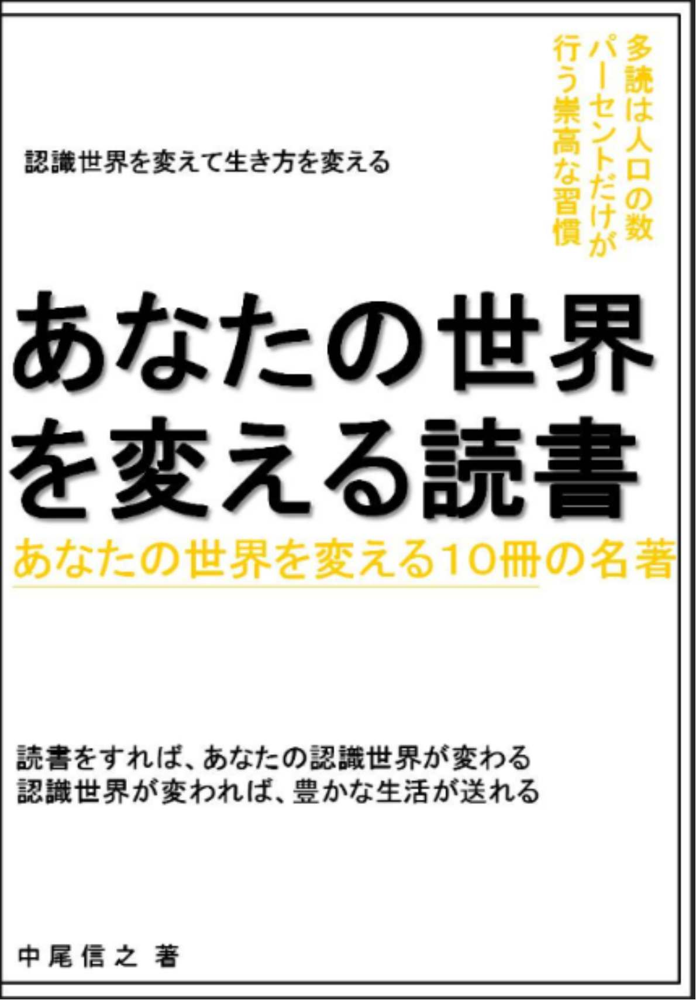
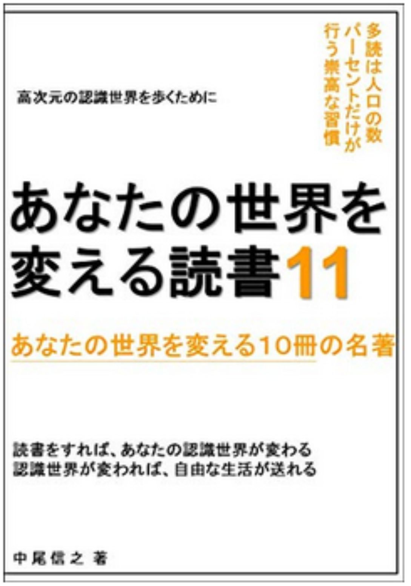
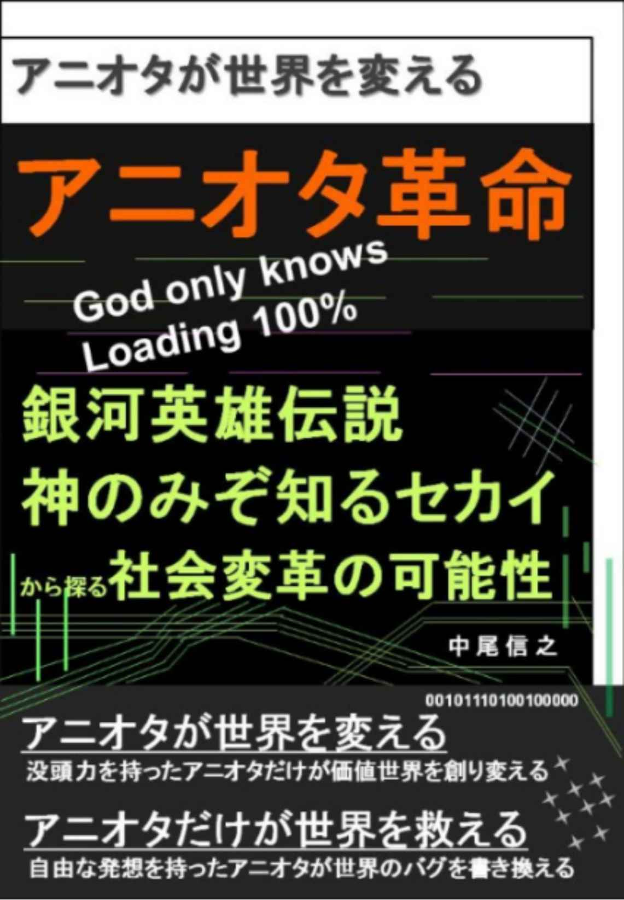
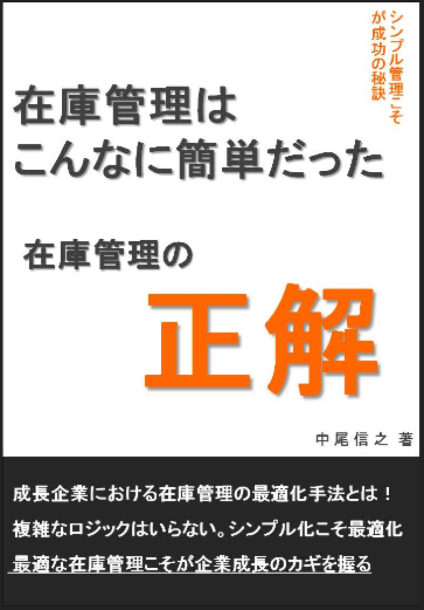

| あなたの世界を変える読書５ あなたの世界を変える１０冊の名著 あなたの世界を変える読書 あなたの世界を変える１０冊の名著 | |
| 中尾信之 | |
| (2018) | |
あなたの世界を変える読書５
あなたの世界を変える１０冊の名著
□はじめに
・無知の世界をこえて
□第一章 生き方のヒントをくれる本
１．現代語訳 五輪書 完全版 水上基地、宮本武蔵
２．食べない生き方 森美智代
３．怒らないこと―役立つ初期仏教法話 アルボムッレ・スマナサーラ
□第二章 世界のとらえ方を変える本
４．白本４ 高城剛
５．一瞬で相手をオトす洗脳術 苫米地英人
６．タネはどうなる？ 種子法廃止と種苗法適用で 山田正彦
７．自由論 ＪＳミル
□第三章 科学によって見方を変える本
８．赤本 高城剛
９．寿命はどこまで延ばせるか 池田清彦
１０．大麻ヒステリー ～思考停止になる日本人～ 武田邦彦
□おわりに
・ 天衣無縫なありようを目指して
□はじめに
・無知の世界を超えて
本書はキンドルアンリミテッド読み放題対象の本の中から、優れた１０冊を紹介するシリーズの第５弾である。第４弾を書いている時は、なかなか名著を探すことに手間取り、読んでも、読んでも納得する本に出会うことが難しかった。ところが今回は、比較的早く、紹介したいと思える１０冊に出会うことができた。
毎回言っていることであるが、個々の１冊が優れているということも重要ではあるが、１０冊が私たちの脳の中のニューロンネットワークのように、はたまた私たちの体内の細胞たちのように相互にネットワーク化して、ひとつの知識体系や、ひとつのゲシュタルトを構成することにつながることが大切だと考えている。
その意味で、１０冊の本たちは、少しずつ伝えている内容が重なっていたり、つながる知識があることを感じて頂けると考えている。そういう視点で１０冊の組み合わせを検討しているがために、シリーズ４では紹介することを控えたが、今回は紹介したいと思った本があったりするのである。例えるのであれば、これは、まるでサッカーのチーム編成のようなものである。たとえ優れた選手であっても、コンビプレーの相性が悪い選手同士で、チームを編成しても上手く機能しないのは目に見えている。だから、チームとして機能させるためには、１人だけ選手交代をすれば済む場合と、複数名選手交代をした方が良い場合があるのであろう。
このシリーズは、毎回、１０冊の知識を自身にインストールするように吸収することで、自分の世界の認識の仕方や、認識した世界での行動の仕方を変え、より幸せな生き方を模索していく力を得ることを目的としている。そのためには、世界の見方や、世界のカラクリの根本的な在り方について、無知であることをやめなければならない。くだらないゴミの情報をため込むこともやめなければならない。今回、「食べない生き方」という本を紹介するが、人間の体が食べすぎになった場合は、消化不良を起こすように、私たちの脳（心）も必要な栄養である良い情報を取り、不必要なゴミの情報は取らないように注意をすることが大切である。
カッコウという鳥は、他の鳥の巣に自分たちの卵を産み落とし、他の鳥たちに自分の子育てをさせる鳥である。これが生態系の中に組み込まれているのであるから、人間がとやかくいうことはないとも言えるが、誰しもカッコウの子供を自分の子どのように育てている他の鳥のことを考えると非常に気の毒に思うはずである。
ところが、無知ということは、これと同じような状態にあるのではないかと私は思う。たとえば、ある行動が日本では常識であると認められているものがあるとする。この常識的と思われる行動が、実は自分や、自分の家族にとって、また日本人全体にとって本当は不利益な行動だったとしたらどうであろうか。これはカッコウに卵を入れ替えられた鳥たちと同じ状態と言えるのではないだろうか。自然に優しいと思ってやっていた行動が、実は自然に優しくない行動だった。子供にとって良かれと思っていた行動が、本当は子供の健康や、創造性を育むことに良くなかったということは、まま考えられることである。
このような、無知の世界を超えるには、常に新しい視点のフレームを構築しながら、不要な情報を破棄して、心と体を軽く保っていく必要があるのではないだろうか。私たちが、日常的に行っている無知を克服していくための読書は苦行ではない。より高次元の認識能力を得て、より高次元の生活を自ら選ぶために行う、このうえない楽しみなのである。
私たちは、ここまで４０冊の知識体系を取り込んできた。これらが相互に複雑なネットワークを作り、ひとつの力となって無知の世界を超える力を与えてくれているはずである。ここに新たな１０冊が、どのようなネットワークをつないでいくか、今回もともに読書の旅に出てみようではありませんか。
私が、本シリーズで紹介した時点では、読み放題対象だった書籍が、その後、読み放題ではなくなっているものも出てきていますが、その点はご容赦を頂きたく思っています。そのような書籍については、私の推薦文を読むことで要点部分をご理解頂くか、興味を持たれた場合は、ご購入頂くか、その作者の他の読み放題書籍を手にとって頂ければと考えています。その点、ご了承頂きたく、よろしくお願いいたします。
□第一章 生き方のヒントをくれる本
１．現代語訳 五輪書 完全版 水上基地、宮本武蔵
宮本武蔵の五輪書は別の本でも一度、読んだのであるが、今回、ふたたび手にとって読み直してみることにした。彼のいう兵法とは、単なる技術としての剣術だけのことではない。まして形式的な剣の構えがどうこうという芸事のようなことは否定している。
一対一の命がけの対決のことだけを論じるのではなく、また大勢対大勢の戦のことだけを論じているだけでもない。武士のありようだけを論じているのではなく、人の生き方までを包含していると考えても良いのではないかと思う。そして、特筆すべきことは、兵法、剣術を語るにあたり、「心」、「気」、「拍子」、「勢い」というような抽象的な言葉がよく出てくるのである。「心を大きくして」というふうな表現などは独特である。
戦いに勝つためには、正々堂々とぶつかり合うとか、力と力で真っ向勝負とか、そういうことは、あまり意味のないことであることが分かる。命をかけた勝負であれば、なおさら勝ち残らなければならない。自分がひとりで相手が多数であるような場合では、得に地の利をいかし、勢いを自分のものとして、相手にいかようにしてでも勝つこと、生き残ることを考えなければならない。力の勝負である前に、心のかけあいの勝負なのである。
依然、苫米地英人さんが著書で、宮本武蔵が二つの太刀を手にして立っている姿を、催眠術師としか見えないということを指摘していた。そのことは、彼の五輪書には、「心」、「気」、「拍子」、「勢い」という言葉がでてくることから、あながち容易に否定できることではない。
人は物質的な体をもった存在であるが、認識している世界は情報であり、戦いにおいては、情報体としての人間が、心を使って戦っているのである。ここで、物理的な肉体だけを鍛えることだけを焦点にあてている武芸と、目に見えない、心、気の勝負でも勝つことを論じている兵法では、次元が異なるのだといえそうである。文章自体はそっけいない文章で書かれているが、特に「火の巻」を、ゆっくりと読むことは現在においても、有益であると思われる。
五輪書の中では、兵法を教えるのに、他の流派のように表も裏もなく、明らかにすることも、秘伝として隠すこともないとしているが、しかし、書かれている内容を理解するためには、それなりの知のネットワークを持っていないと無味乾燥な本としかとり得ない可能性もある。その意味で、オープンにしれていながら、秘伝に近い面もあるということである。読んだ時に理解できなくても、自分が置かれた状況が変化した時に、ふいに五輪書の文章が思い出されることがあるかもしれない。その日がくるまで、日々、鍛練し、良く吟味する必要がある。
２．食べない生き方 森美智代
シリーズ第三弾では「３日食べなきゃ、７割治る」、「やってみました。１日１食」という本を紹介した。それに続いて紹介するのが、そこでも紹介されていた森さんの「食べない生き方」である。
この作品は、実際に青汁いっぱいで生活をされている森さんの実体験をもとにして書かれている。まさに、生きる証拠があるのだから、それを非科学的だといって否定はできない。
そしてまた、誰もが森さんのようになることは容易ではないが、単に森さんという個人の特殊な事例としてではなく、方法論としてある程度、確立されている域に到達しているからこそ、必読の書であると言える。この本を読んだ時に、不思議なことは、森さんが言っていることが、今回も紹介する「一瞬で相手をオトす洗脳術」を書かれた機能脳科学者の苫米地博士の主張と一致している点である。それは、小食で食べすぎないことが良いということと、過剰な有酸素運動は老化を促すだけなので不要であるということである。
森さんの摂取栄養量は、今までもこのシリーズで批判をしてきたように、現在の常識とされている人の機能や生物の可能性の理解が足りない、偏った常識であるところの栄養学や、カロリー計算、常識とされる医療では、説明ができない状態である。そして、過去に紹介した、「医学不要論」や、「ワクチンのすべて」など、現在の医学の常識の不足点を批判した方々の考えとは一致しているところが多い。
森さんによると、人類はもともと、この何十年かを除いて毎日お腹いっぱい食べるということを経験していなかった生き物であるという。そう言われてみれば、まったくその通りである。以前も紹介したドイツの諺、「１日２食は自分のため、３食目は医者のため」ということを聞けば、食べ過ぎには昔から注意が払われていたことが分かる。ところが、トースターを発明したエジソンが、電力をもっと使ってもらいたいという理由と、トースターをもっと買ってもらいたいという理由から、１日３食マーケティングをしたのが始まりで、今のように誰もが食べ過ぎることが、当たり前になってしまったとも言われる。
日本ももともと江戸時代は１日２食が通常であり、ドイツでも過剰に肉を食べるようになったのは強い兵隊を作るという、非人間的な目的があってのことであると言われる。このあたりは、今回、後半で紹介する大麻の本とも重なる。もともと日本にある大麻という自然の植物で、持続的に利用することが可能な環境に優しい植物の利用が、部分的に禁じられている反面、飽食のおかげで、お医者さんは忙しくなり、かつ自分で小食にして体質改善するよりも、薬で治そうとするため、製薬会社も儲かるという体制ができあがってしまっているのである。
森さんの本を読んでいると、このようにいろいろな本の主張とつながっていく部分が多い。そして、食べるという欲の分析をされているのも興味深いところである。そのうえで、食べる欲を自分でコントロールすることができれば、他の欲望もコントロールできるようになり、自分にとって大切なものが分かるようになるというのである。そして、過去や未来に縛られず、今を見つめることを説いている点も、今まで、このシリーズで紹介してきた本と共通する生き方の知恵であると言える。
若干、スピリチュアルな内容の記載があり、その部分は私も走り読みをしたが、小食についてだけではなく、ご本人が難病を小食と、必要な運動を通して克服された経験から、いろいろな経験をされたことが分かりやすく書かれている。過剰な有酸素運動は必要ではないが、筋肉を正常に保つ運動は必要だということで、いくつかの運動法についても図入りで説明がなされている。そして、小食は世界を救うというように、確かに多くの人が小食になれば、食糧の分配問題も大きく改善されるとしている。小食は自分のためだけではなく、人のためにもなるのだという。
何十年も前に、人類に必要な食糧生産量は確保できていながら、毎日大量に食糧を捨てている先進国と、食糧が足りない発展途上国とが同時に成立しているのは、分配の問題だけなのである。食べるという欲を抑えられないから運動をしてエネルギーを消費するという考えも先進国では一部、流行のスタイルかもしれない。しかし、過剰に食べることと、過剰な有酸素運動はどちらも老化を推進することであることを理解して、その生き方を選ぶか、考える必要があるのではないだろか。いずれにしても、過剰な食欲を抑えられなかった場合、他の欲もおさえられなくなる可能性が高く、その場合は、欲に振り回されて徒労の人生にならないとも言えない。少し食べる量を調整して、小食を実験として楽しむのも良いのではないだろか。日本でも昔から、腹八分という言葉があるくらいである。
３．怒らないこと―役立つ初期仏教法話 アルボムッレ・スマナサーラ
本書の著書は、シリーズ第四弾で紹介した本で、養老先生と対談をされていた方である。
基本的に私は、家の外にいる時、怒ることはあまりない。しかし、やっぱりどうしても接することを避けられない嫌な人が他部署にいて腹立たしい経験をしたことはあるし、電車の中で嫌なマナーの悪い嫌な人がいたりして、怒りの感情が沸きあがってくることがないわけではない。私も修業が足りないのである。このようなことは誰にもあることであると思う。
実際に、そのような場面で、声を荒げて怒ったり、議論したりすることがなかったとしても、私たちの感情の波が揺れていること否定できないのではないだろうか。そうすると、少なからず自分がダメージを受けていることになっていると言える。
世の中には負の力を持った情報がいつも少なからず存在していて、テレビのニュースやＣＭは、それを意図的に、もしくは意図的ではなかったとしても、無責任に伝達しようとしてくる。それらの情報は、まるでコンピューターウイルスのようなものである。私たちは、そのような情報を正しくファイヤーウォールをはって、シャットアウトするにこしたことはないのである。私も、幼児用番組以外は、ほとんど見ないように、この１年で自分を変えることができた。小食で体を維持できるようになった小食エンジンを持った人が、あまり不要な食べ物を受け付けないように、私も不要な負のイメージを持った情報を受け付けないようになってきたのである。
程度の低いバラエティ番組も同じである。あえて人の感情を揺さぶるように作っている大河ドラマも同じである。「明治維新という名の洗脳」という苫米地さんの本でも指摘されているように明治維新を必要以上に美化するのは、かなり意図的なことであるが、そんなに明治維新が素晴らしいのであれば、どうして、その後、愚かな戦争にのめり込んでいったかということと、つじつまが合わないように小学生の頃から違和感をおぼえていた。
ところが、そもそも明治維新をしたことも戦争をしたことも、お金によって日本人が支配されていくことの視点から見ると、まったく一つの繋がった事象として見ることができる。そこで踊らされた明治の元勲は、ほとんどがろくな死に方をせず政権を追われたり暗殺されたりしている。
テレビだけではなく、ネットニュースも同じくらい、もしくはそれ以上に弊害がある。負の情報は、ネットからもできるだけ受け取らないほうが賢明である。負の情報ばかりに接していると、それに意識がひっぱられた状態になり、悲しみやすくなったり、怒りやすくなったりしてしまうことに慣れてしまう。だから、私はそのような情報は取り込まないようにしているし、仮に耳に入ってきても以前、自著で記載したように、毎日、多くの人が交通事故や、自殺で亡くなり、多くに方が行方不明になっているうちの１件をマスコミは取り立てて悲劇として報じているだけで、世の中には沢山の人たちが日々、不幸になったり、亡くなったりしているんだなあと冷静に受け止めるようにしている。殺人においては極めて数字が少なく、かつほとんどが肉親同士によるものである。凶悪犯罪が多くなっているというのは、単なるイメージにすぎない。
それとは逆に、世の中には、今日、生まれる子供がいるだろうし、今日は幸せなできごとに出会った人も多くいるのである。マイナスだけに意識を向けることは是非、やめたいものである。
そして、自分もささいなことで怒りに支配されないような平穏な心を、家の外だけではなく、家の中でも持てたら楽だろうにと思い、この本を手にしたのである。怒りを我慢したり抑え込んだりするのではなく、怒りを起こさないような状態にしていくということは、まるで悟りのような道をいくことのようにも思える。しかし、世界は自分が認識しているのであるから、電車で子供が騒いでいる時に、これを腹立たしく感じる人がいる一方、自分たちが、ちょうど同じくらいの子供がいる私にとってみれば、微笑ましく観ることができるのである。
自分たちの認識している世界を、どう受け取るか。怒りにみちた目で見るか、微笑ましい事象に満ち溢れた世界とみるかは、私たちの心の持ちよう、世界の見方、世界の創造の仕方に関わっているのである。
□第二章 世界のとらえ方を変える本
４．白本４ 高城剛
毎回のように高城さんの本を紹介させて頂いているが、白本の最新作が出たので、私もすぐに飛びついて読んでみた。このシリーズは、Ｑ＆Ａ方式で成り立っており、いくつもの質問に高城さんが答えている。非常に簡易に作られている本である。手間もほとんどかかっていないのではないだろうか。しかし、それでもエッセンスが入っていれば、それで十分だといえる。私は読者からの質問の部分は読まずに、高城さんからの回答だけを読んでいる。それで十分理解ができる内容になっている。
過去の本でも高城さんが書かれているように、高城さんは、読者の量より、読者の質にこだわっていると今回も書かれていた。人口の５％程度のイノベーターに読んでもらいたいというのである。今回、白本を読んでいるうちに、あることを思い出した。それは、非常に難解な学問の本があったとすると、その本を読む対象者は、あらかじめその分野の入門書や関連の書籍を数冊読んだ人間が読者としての対象になっているということである。法律の勉強をしていない人間が六法を読んでも法律の解釈が難しいのと同じである。そうすると、白本シリーズの短い、あっという間に読んでしまえる文量で、普通の人は何かを得ることができるのだろうか、面白いと感じ取ることができるのかということである。
しかし、ここまで４０冊の知識体系を取り込んできた読書の同志の皆様であれば、高城さんの短い言葉の中に込められている意図を感じ取ることができるのではないかと考えている。
必要以上のお金は薬物と同じという。そして、実際、７万５０００ドル以上の収入の増加は幸福につながらないという研究結果も紹介されている。これも自分の認識のありようだと言える。何千万円もないと落ち着かない人もいれば、ある程度に生活を送れるお金で心の平安を得られる人間もいるということである。怒りを起こさないということと同じように、過剰な食欲を起こさないということ、そして過剰な金銭欲を起こさないということは、心の平安と、自由を得るためのエッセンスであると思われる。そうして、その先に、私たちが何かをつきつめて行けば、高城さんの言う、ヒューマン３．０になれるのかもしれない。
日本が仮に２０２０年以降、たいへんな状態になり、世界も相変わらず不安定だったとしても、私たちの日常は続いていくのである。そしていろいろな科学技術の進化を取り込みながら、私たちの生活も変化を続けていく。その中で、変化を良いものとして取り込めるかどうか、あらゆる事態を想定して、リスクを分散しておくかどうか。私はオリンピックに、まったく興味はないのだが、冷静に考えると日本社会はオリンピックに浮かれている場合ではないのかもしれない。
５．一瞬で相手をオトす洗脳術 苫米地英人
本シリーズでは、苫米地英人さんの本も毎回紹介してきている。毎回紹介している理由は、２００冊以上の書籍を出版し、読み放題対象が多いからということもあるが、苫米地さんの本の内容が面白いという理由が一番である。
今回は、世界の認識の仕方ということも含んでいるが、それだけにとどまらず洗脳に関する方法論（テクニック）の部分まで記載されている珍しい本を紹介したい。もちろん、内部表現の書き換えという言葉を習う時には、当然、人の脳が、どのように世界を認識しているのかという説明から入るわけであるから、認識している世界を変えようとする私たちには、もってこいの本ということである。すでに私たちは、「超瞑想法」などで学んでいるので繰り返しになる部分が多いかもしれないが、改めて方法論を学ぶ前のウォーミングアップとして、１冊通して読んで頂きたい本である。
さて、私自身は現在、４１歳であるが、組織としては８つ目の組織に所属している。それぞれ、それなりに大きく有名な組織に所属してきた。３０代の後半になるまでは、１００発１００中で面接に通るというわけではなかった。むしろかなり低い勝率だったし、それが当たり前であると思っていた。もちろん相性もあるし、無理にあわせる必要もないし、先方は面接回数や面接人数をノルマにしている人事担当もいるだろうし事情はまちまちであると思われる。ところが、３８歳を超えてから、３つの組織に採用され、また、組織に入らなかったところの面接も、ほぼ通過するのが当たり前になった。そのようになることと前後して、苫米地さんの本を読むようになり、実は自分が、苫米地さんの言うような洗脳に近い方法論を誰にも習わずして、無意識でそれに近いことができていたのではないかということに気づき始めたのである。そのため、「自分を生きる天職（転職）のすすめ ～１００％実力を表現する面接法～」という本を公開し、非効率な面接を実施している企業に対抗する術（すべ）を、面接を受ける側が身に着けることに貢献しようとしたのである。
映画に出ている俳優さんが、自分の過去の悲しかったり嬉しかったりした感情を、何倍にもしながら演技をすることで、映画を見ている相手に、その感情が伝わると言われ、この演技法はメソッドとして確立されているのだという。あらゆる場面で、このような感情を言語ではないメッセージとして伝えるということが可能であるというのである。私の場合は、自分の１冊目の本でも書いたように、過去の自分の成功体験をありありと思い出しながら分かりやすく語ることで、それを聞いた相手が、分かりやすい言葉だけではなく、イメージとしても、確かに私が何かを成し遂げたということを感じ取れるようにしているのである。
これは、とても大切で、仮にだらだらと２時間話をするよりも、３０分でも１５分でも相手に、「この人は何かをやる人間である。この人と働きたい。この人と働くことが得である。この人は面白いことをするのではないか」など、なんらかの印象を強く伝えることが可能なのだと私は経験的にも感じている。苫米地さんの本を読んだからといって、相手の眼球運動を引き起こして、レム睡眠の時のような状態を作ったりということまでも実践しようとはしていない。しかし、相手と対面する場にのぞむ時や、対面している場において、自分がリラックスしてオープンになれるように、頭が早く回って、柔軟な切り返しが自然にできるように、逆複式呼吸や、逆腹式ではなくても長い呼吸を整えてから、重要な場には臨むようにしている。
この本は、世界の認識の仕方から、洗脳の方法論まで書かれているが、それに加えて、まずは、そのような方法論を利用する者は健康であらねばならないという原則を示し、そのために２つのことを明言している。
「有酸素運動をしすぎるなということ」と、「過剰な栄養を取りすぎるな」ということである。このことは、今回紹介した「食べない生き方」の主張と全く同じである。私の親しい友人も、過剰な栄養を摂取して、過剰に運動をすることで太りすぎないようにしているが、これは提示された二つの原則の両方に反していることである。ところが恐ろしいのは、過剰な栄養摂取と、過剰な運動は、現代社会の常識では、ワンセットでかなり市民権を得てしまっているということである。そして、個々人は、それを自分の意志で選択したように思っていても、実は、自分で選択したように思わされているということなのである。苫米地さんが、秘伝である洗脳護身術に関するノウハウの一端をこのような本に明かしている理由は、あまりにも世間の常識が、自分で護身できるようにしないと強力な誘導をしているからなのである。本の冒頭では、そのあたりの理由も説明がなされている。よく吟味する必要がある。
６．タネはどうなる？ 種子法廃止と種苗法適用で 山田正彦
本作品は、日本人であるならば是非、知っておいて頂きたい内容が詳細に説明された本である。文部省関連の政治スキャンダルの影で、まったくと言っていいほど報道されていないのが、種子法という法律が知らない間に廃止され、野党はこの復活の動きをとったりしていることである。
恐ろしいのは最も重要な事柄が国会議員さえ知らない間に秘密裏にすすめられ、そして法律があっという間に形式上の１２時間の国会審議で廃止にされ、大きな利権があっという間に、多国籍企業に売り渡されるということである。実際、この本の著者は民主党政権時代に農林水産大臣をされていた方であり、苫米地さんなどと並んでＴＰＰに関する本を出版され、唯一の専門家と言ってもいい方である。その山田さんをして、種子法の廃止というのは、予期していなかった出来事であったという。
ＴＰＰは８０００ページにも及ぶ、大量の条文があるが、アメリカの議員も、日本の議員もほとんど中身を知らないと秘密条約であるとも言われ、その１文、１文に恐ろしい内容が仕込まれている。最も削除すべき条項はＩＳＤＳ条項というもので、これは、非関税障壁があった場合に、それによって不利益を受けたと吹っ掛けさえすれば、巨額の損害賠償を多国籍企業が、日本政府や、日本の地方自治体に請求することができるという条項である。過去の貿易摩擦の判定は国家と国家の交渉で、ＷＴＯで行われるものが、ＩＳＤＳ条項であれば、多国籍企業と、国家の裁判になるのである。例えば、どのようなことが論点になるかといえば、産地を表示することが、非関税障壁と言われるということである。消費者の選択する権利、知る権利から、どこで取れたか表示するのは、生産者や販売者の自由でもあり、正常なマーケティング行為でもある。これが、日本のものだけ売れるようにしている非関税障壁と言われる可能性が高いということである。実際、アメリカとカナダではこれが論点になり、産地表示は非関税障壁であると認められたということである。
種子法の廃止は、ＴＰＰの問題とセットになって極秘裏に推進と、批准が勧められていたに違いないという。以前、私は「アニオタ革命 アニオタが世界を変える 銀河英雄伝説 神のみぞ知るセカイ から探る社会変革の可能性」という本を公開した。この本は、アニメの名前が２つ入っているが、真面目に民主主義について考察した内容となっている。民主主義は多数による政治という建前になっているが、これは本当だろうか、今回の種子法廃止は、自民党議員の多くも知らない間に進められていたと思われることからも、一考する必要がある事柄である。
民主主義政治においては、全体の５割の得票数を押さえれば、政権をとれるが、仮に自民党が５割を公明党の助けなどを得て抑えたとする。その自民党の中で、その半数を抑えれば自民党をおさえることができる。つまり全体から見れば２．５割をおさえれば自民党を支配できる。実際は、いくつかの派閥があるので、その半分の１．２５割を押さえれば、自民党を支配し、国会全体を支配できる。
このようにして、意思決定にいくつもの多数決の階層がビルトインされると、 民主主義は実は少数による多数支配 を成しえるものなのである。１割程度の多国籍企業に魂を売った人間が政府を構成し、自民党議員も知らない間に、ことを進めていく。その際は、内閣総理大臣として、内閣として、大臣としての正当な権限を持って、農林水産省の人事に介入して次官をすげかえて、省内の反対をなくしてしまう。その前に、そもそも農水省を蚊帳の外において、経済産業省がこの案件をリードする。そのようにして、国民の利益そっちのけで種子法を廃止してしまったのである。
この事例には、民主主義国家、法治国家の根幹を揺るがす大きな問題がいくつも含まれている。
・ＴＰＰは各国や各国民の主権を多国籍企業が奪える条約であること
・民主主義が多数の意志を尊重せず少数の意志のみで運営されていること
・法律で禁止対象品目を定めずに、農水省規則で対象品目を指定することで、立法権を持つ国会を無視して、法的効果を国民に及ぼせること
・省令で法的効果を及ぼし、厳しい罰則を付けていることは罪刑法定主義にも反しているということ
・種子法の廃止とＴＰＰの批准と、関連法案の成立により、自由な種の市場が形成されるのではなく、日本が長年、税金で研究し蓄積したノウハウが一方的にモンサントなどの多国籍企業に奪われること。日本のノウハウはオープンにさせられるのに、多国籍企業や日本の私企業のノウハウはオープンにされない不平等な内容であること
・種の情報や取引が国の情報も含めてオープンソースになるのではなく、農民の種を育て守る権利を奪い、多国籍企業に独占せしめることで、実はオープンではなくクローズになり、利権を独占させること
・モンサントなどは、日本の農業や食料、世界の農業や食料の問題はどうでも良く、農業と食料を種と、種とセットにした農薬で支配し、暴利を得ようとしているだけであること
・彼らの企業スタンスは、自然や人体へのリスクを軽視していること。実は収穫高を安定的に増やす種を持っていないこと。にも拘わらず、農民を奴隷のように使う契約書で縛ろうとしていること
もし、モンサントや、モンサントを買収する予定のバイエルなどが、正しい知見、見識と、ノウハウを持って、世界の食料問題を解決しようとし、またその能力があるなら、どうぞ頑張ってくださいと言いたいところである。ところが実際は、モンサントには知見もノウハウもないから、日本が蓄えた知識が欲しいのである。自分で研究をせずに、それをお金やなんらかの方法で、一部の政治家を動かして、ごっそり持って行ってしまう。このようなことがまかり通るのは、日本が相変わらず欧米の一部の権力者（政治家ではなく本当の権力を持ったものたち）に無条件降伏をしている状態に近い状態であるからだと思う。
遺伝子組み換え植物は、ロシアも中国も使わないと言っており、アメリカも市民運動から増やせないと言っている。だから言うことを聞く、政治家を動かして、日本では使えるようにしたい。既にアメリカより、日本は遺伝子組み換え植物の承認数が多くなってしまっているという。
ここまで危機的にモンサントや、モンサントと提携した、三井化学アグロなどの恐ろしさを書いてきたが、山田さんの本を読んで非常に暗い気持ちになりそうであった。しかし、私は実際、彼らの脅威は短期間で克服できると考えている。
なぜなら、上述したように彼らには理念がないからである。そしてまた、彼らには本当の技術がないからである。本当の理念がなければ、自然相手の本当の技術を育むことができない。人類のための理念がなければ、食の安全のリスクを克服することができない。彼らには、できないことが多すぎるのである。だから彼らは南米でもアジアでも無理やり法律を作らせても失敗し、問題を生むばかりなのである。彼に、日本モンサントや、これと提携した三井化学アグロが、個別の契約書で日本の農民に、自分たちが販売する種子を購入する場合、自分たちの指定する育成方法に従い、全ての農薬の利用を義務づけても、彼らの種子から、安定的に経年で高い収穫はあがらず、農民は、２、３年でその種子を利用することをやめるものと思われる。契約書で縛ろうが、無理なものは無理なので自然と農民は離反していくのである。そもそも、彼らの種子を買うことに乗る人がいなければいいのだけれど、仮に多くの人が乗ったとしても、このような推測が成り立つのである。そう思うと、ある程度、楽観視することができる。しかし、遺伝子組み換え植物の種子が、まわりの他の種子と受粉して影響を及ぼすと、周りの種子についても、遺伝子組み換え品ではないですという表記ができなくなってしまうという。また、遺伝子組み換え品にしろ、種のないＦ１種子にしろ育成法を指定して、大量の農薬で、土壌汚染をされることの影響もいなめない。農薬を含んだ種子であれば、なおさらである。農薬の問題は、今までの日本の農業でも、あった問題であるが、指定した育成法に従えと契約書に書かれていると、ＪＡの縛りより強いものと思われる。
アイルランドでジャガイモが同じクローンから作られて多様性がなかったため多くの人が餓死し、アメリカに多くの方が移民するようになったということからも分かるように、種子は多様な種子を持つことで、食の安全が保たれることは歴史が証明しているのだという。多国籍企業の開発した種子に、独占的権限を与えても、その企業と、安倍政権しか得をするものはいないのである。ちなみに、それぞれの種子は、それぞれの土地の空気や、水や土にあった種子として存在しているのであって、どこかの企業がどこでも育てやすいために作った種子というのは、やはり無理があるように思われる。そして、山田さんの本でも紹介されているように、モンサントなどが、強い農薬を含ませた種子を作っても、それに耐性を備えた強力な雑草を生み出すことにつながるのであれば、収穫高は増えるどころか、年々、収穫高は減り、増えるのは人体や土地に残留する農薬と、農業のコスト、ひいては食料そのもののコストと、モンサントなどの売上ということだけになるのであろう。
科学技術の進歩で、もっとクリーンに、クールに、スマートに野菜を作れないものだろか。種子メーカーとはまたく違うアプローチをすることで、野菜といわず人が摂取できるエネルギーを作れないものだろか。ミドリムシ（ユーグレナ）などが、それに応えてくれるのかもしれないと思うと楽しみである。食糧に困れば、深海魚もどんどん食べられるし、昆虫も食べられるし、いろいろ考えることができる。そして、小食というのも繰り返しになるが、ひとつの解決策ではある。
７．自由論 ＪＳミル
ミルは１８０６年から１８７３年を生きたイギリスの自由主義者である。政治家だった時期はあるようだが、学者だったわけではないようである。自由主義者だけではなく、社会民主主義思想にも影響を与えたといわれる。自由論は１８５９年に出版されたものであるという。１６０年前に出された書籍であるが、今でこそ、この本は、人々に読まれるべきであると思う。
今回、高城剛さんの読みやすい本を２冊紹介しているが、この自由論と、種子法に関する本は比較的、ページ数も多い本であるので、１０冊としてのバランスは取れるように配慮した。よく古い本を読むことを勧めている人がいるが、正直、古い本の多くは読みにくく、要点がぼけているものが多いのも事実である。しかし、この本は、近代に書かれた本であるので、古すぎず、回りくどい論調ではあるが、骨太な思想であると感じたため、今回、ここで紹介させて頂きたい。読むのが手間だと感じた人は、ここに私が書いたことだけを読むことでも十分であるかもしれない。
本書は、世論というものの危険性を指摘している。世論は凡庸な平均の人間の集合意識として形成されるから、そこには、正しさを保障するものはなにもない。そして、世論と同じように疑うべきものとして提示されているのは、慣習である。慣習は、ここでは常識と言い換えても齟齬がないと思われる。世論や、世の中で正しいとされていることであっても、完全なる真理というものは存在しえないのであるから、正しいことという疑いが少ない考え方であっても、常に反対意見の挑戦を受けることで、少しずつ是正されたり見直される必要があるというのである。ということは、政権が安定しすぎていることは大いなる問題ではないだろか。二大政党制というものも、多元的な意見が画一化されすぎているといえるのではないだろうか。
慣習（常識）についても同じである。これが、ひとりひとりが自分で選んで従っているのであれば、それは良いことであるが、強制的に慣習に従わせるような力学が働くことの危険性を指摘している。このような指摘は、１６０年前も今も同じことなのである。
そして、そのような社会の画一化を脱すことができるのは、慣習や世論に縛られない個性、自由を持った人間であることを指摘している。その個性が、直ちに社会のためになる善なるものでなくても良く、画一化された生き方以外の生き方があるということを提示するだけでも意味があるというのである。１６０年前のイギリスと、現在の日本やアメリカ、欧州、あらゆるところで、画一化の波に負けずに、個性と自由を突き進んでいる人の生き方を、私たちも肯定していく懐の深さが社会には必要なのではないだろか。
アイルランドのじゃがいもが全て同じクローンだったために、食糧危機が発生したことを前述したが、人も同じなのではないだろか。同じ画一化された生き方ばかりを良しとしていた場合、環境が変わった時に、その慣習が環境に合わなくなった時、人類の危機の大きさは絶大である。しかし、画一から離れた個性が、この危機に耐性を持った人間であれば、人類はその命脈を保つことがかなうであろう。
私たちは、この１６０年前の書籍がいうように、自由ということの意味を問い直し、常識の適用範囲を常に見極め、人と違うことに誇りを持って、自分の道を歩いていくことが最善なのだといえるのではないだろうか。
□第三章 科学によって見方を変える本
８．赤本 高城剛
高城さんの本は、これまで、白本、黒本を紹介してきているが、今回は、健康と医療に関するテーマに的を絞った回答集として赤本が公開されている。これは堀江貴文さんが、予防医学のビジネスを展開されているのと同じで、ここで話題になっているのは最先端医療によって、病気を予防して行こうということである。過去の高城さんの本でも、日本の医療に対して疑問がなげかけられていた。日本の医療の平均点は高いが、それで治せない病気もあるし、そもそも服を選ぶように医療を選ぶ時代になっているのだと指摘している。
予防という観点から言えば、最先端の予防医学を受けるということもさることながら、まずは一日二食にするところから始めるべきだと言えるし、病気のことを考えるより、普段の生活を考えることが先のように思われる。
最近、子供を耳鼻科に連れていくように言われてついて行った際にも違和感が多かった。病院は満員であるのに、誰一人咳もせず、鼻水も出ている様子がないにもかかわらず、みな貴重な土曜日に１時間以上、病院で待たされることを良しとしているのである。私には驚きである。たいして、どこも悪くない大の大人がお金を払って、時間を無駄にしているようにしか見えなかったのである。そしてまた、そのような状況が医療保険を圧迫して、お医者様と製薬業界を喜ばせているのである。また、これで問診が素晴らしければ話は違うのだか、まるで工場のベルトコンベアーにのせられたように処置をされて、「また、すぐ来てね」で終わるである。立ち上がりつつ、私は質問をして話をしたが、他の患者さんは、このベルトコンベアーでそのまま自動的に排出されて帰って行くのだろうと思われる。これに、高い点数をつけて高い医療費が国民保険から支払われる必要があるのだろうかと不思議に思う。
少なくとも私は、歯が壊れた時の歯医者か、肌が荒れてどうしようもない時の皮膚科しか、この９カ月通っていない。内科も行くのはやめたし、薬もひかえるようにしている。栄養ドリンクも飲むことをやめた。「病気のリスク」より「薬のリスク」が高いと思っているという高城さんの言葉も、なんとなく感覚的に正しいような気がする。対処療法の問診しかできない医者ではなく、根本的に予防を試みるための医療を、しかも自分が受けたい時に、受けたい方法で選ぶということが必要になってきているのだと思う。そしてそのためには、医療保険の適用内であろうが、適用外であろうが、それは自分の判断で受ければよいということだと思う。最先端の予防医学の情報にも触れつつ、小食と、本当に必要なエネルギーを取ることで、病気を寄せ付けない生き方を自ら実践することが必要なのだと思う。
「食べない生き方」で森さんが指摘していたように、病気の人は、自分で治ることを決意して、自分で行動しなければいけないが、高城さんも、この本人の意思が最も重要であることと述べている。
お医者さん頼み、家族頼み、病気だからという理由で楽ができる、かまって貰えるという受け身のスタンスでは、実は、自分が病気である状態を肯定してしまっているのだと言える。これは苫米地さんのいう、人はコンフォートゾーンにしることを好ましく思うという考え方から見てみると、病気である負の状態を自分のコンフォートゾーンにしてしまうことが、往々にしてあるということなのだと言えそうである。
自分は病気にならないための小食をする。自分は病気を予防するための最先端の予防医学を利用する。これらは全て、私たちの意志によるものなのである。
９． 寿命はどこまで延ばせるか 池田清彦
高城さんの赤本を読んだあとで、この本を読むと、池田さんが、解決できないと記載していた部分が、最先端の予防医学では、予防可能な領域も出てきているのではないかという齟齬を感じることがある。この「寿命はどこまで延ばせるか」という本は、何か結論を出しているというわけでもないし、新たな発見をしているわけでもない。しかし、過去の科学者がどのように考えてきたかということや、まだ証明されておらず結果が出ていないことに対して、池田さんなりの推測が提示されていて、いろいろな思考実験をしている点で、面白い作品と言えたので紹介したいと考えている。
高城さんの本でも、数年単位で、考えられていることが翻る可能性があるため、過去に正しいと思われていたことが、実は数年後、正しくないことが証明されたりするように、今、私たちが正しいと思ったことが、実は数年後、正しくなくなっていたということは十分にありうる。そういう世界を私たちは生きているということを認識するだけでも、意味があることだと言える。
私が今回、池田さんの本を読んで一番印象に残っているのは、「ゾウリムシ」が飢餓状態になると自ら分離して、遺伝子を新しくするという現象である。飢餓という困難な状態に、生命がその生きる力をマイナスにふれていくのではなくて、逆にそこから新しい力を生み出してしまうという、その現象が面白く感じられたのである。
そこでつながるのが、今回、４冊目で紹介した「食べない生き方」と、シリーズ第三弾で紹介した「３日食べなきゃ、７割治る」、「やってみました。１日１食」である。つまり人間も飽食で満たされた状態になっているよりも、新たなエネルギーを発揮することにつながるのは、若干、お腹が減っているような状態の方がいいのではないかということである。もちろん、動物実験でも、同じようなネズミの中でも、ある物質が毒になったりならなかったりすることもあるというし、ネズミと人間で違う反応がでることもあったりするというのだから、ゾウリムシの反応と人間をそのまま比べることはできないと言える。しかし、同じ生命として、ＤＮＡのデータベースを共有しているものとして、リンクしている部分があり、あながち、まったく関係がないとは言えないのではないだろうか。
また、この本を読みながら考えさせられたのは、生物が、個々の個体としての寿命ではなく、種としての繁栄の観点から、生き方のありようや、寿命を選んでいるかのごとく読めるところである。これは、あくまで人間の解釈なので、生物が個体としてではなく、種として、このような生き方で種を反映させようと、なんらかの大いなる意志を持って生きていると言っていいものかという反論もなりたつ。
シリーズ第三弾で紹介した「植物という不思議な生き方」を読んでいる間にも同じような疑問を持つことがあった。たとえば、植物たちが虫を呼ぶために、いろいろな工夫をしているが、この工夫が、作品の中で、植物を身近に感じるようにできるために、植物たちの意志によってなされているように描かれていた点である。そこに種としての戦略的な意志があるのか、自然にそうなったのか、そういうものが残っていったのか、私たちが勝手に解釈しているだけなのか、答えは分からない。
パンダはどうであろうか。もともと肉食だったと思われるパンダが、人間などに追われて、十分な食べ物がない土地に追いやられ、そこでおなかをすかしていた時に笹を見つけて食べるようになった。しかし、もともと肉食だったので、笹からエネルギーを吸収できない体質なのである。ところが、空腹という断食の間に、なんらかのプロセスを経てお腹に住み着いた笹をエネルギーに分解できる菌を獲得したことで、パンダは美味しそうに笹を食べて生きることができるようになった。
この例でいうと、パンダは肉食を意図的に放棄したわけでもなく、住み慣れた土地を追われた後、意図的に笹を分解できるようになったわけでもなく、なりゆきで笹を分解できる菌を得たものが、笹を食べて生き残るようになったと考えることができるのではないだろうか。そうした場合、パンダが笹を食べるのは戦略的意志によるものではなく、自然適応と言えるのではないだろうか。
それでは、魚が陸にあがった現象はどうであろうか。魚が陸に上がった頃、水中は生き物が飽和状態になり、小さな魚たちには住みにくい環境になっていたと言われる。そのような環境から、パンダのように追われて浅瀬に移っていき、半分水中、半分陸地というような環境に適応していったハゼのようなものがいたのかもしれない。はたまた苫米地博士がいうように、陸に上がりたかったからという個体としてか、種としての意志が働いたのかもしれない。熱帯魚を買っていると、水槽にフタをしていても隙間から魚やエビが飛び出して床で干からびてしまっているのを見つけることがある。さっきまで綺麗に泳いでいた生き物が、陸で干からびてしまっているのを見ると、とても悲しい思いになったり、申し訳ないと思ったりする。そうして、あまり水を入れすぎないようにしようと思うのである。この魚たちは、外が楽しそうで飛び出したのか、水槽の中の環境が悪くて飛び出したのか、理由ははっきりとは分からない。でも魚たちも人間と同じく、外がどういう環境か分からなくても、外に出てみたいという衝動のようなスイッチが入ることは自然にあるように思える。
池田さんの本では、生命が複雑な機能を得るようになった代わりに、寿命というものを持つようになったと冒頭から繰り返し書かれている。つまり、寿命は複雑な人間という生命にはビルトインされたシステムだから変えられないという視点なのである。ところが赤本で書かれたような内容や、生命というものと機械、物質と情報というハザマを超えて考えれば、現状の人間の生命という概念の外に、良いか悪いかの価値判断は別にして、人間の寿命はさらに延びていくものと思われる。そして、その過程で、意図的か、自然の成り行きか、人間は、これまた価値判断は置いておいて、変化をしていくのだろうと思われる。池田さんの本は、このような思考実験をしていくうえでの基礎知識というか、周辺知識を増やし、ゲシュタルトの幅を広げる意味でも読んでみると面白いのではなかと思う。
１０．大麻ヒステリー～思考停止になる日本人～ 武田邦彦
シリーズ第四弾では高城剛さんの「大麻ビジネス最前線」を紹介した。あちらを読んだうえでも、武田さんのこの本は、より深く楽しめる作品であった。科学者というと、ある限られた分野の細分化された一部分だけを研究して、一般人には分からない研究をしているような印象があり、事実そのような科学者が多いのだと思われる。ところが、武田さんの本を読んでいると、科学の知識で分析をしているだけではなく、それが社会との関係で、どのような影響があるのか、どのように利用するのが適切なのかということを、きちんと考えていることである。かつ、本作品では、大麻というものの、日本における歴史、アメリカでの歴史、世界の歴史が、きっちりと整理されている。大麻というものの扱われ方をとらえるにあたって、日本の文化、アメリカの文化、社会の成り立ち、宗教との関係など周辺の情報が適切に盛り込まれることによって、より正しく理解できるようになっているのである。
これこそ、ゲシュタルトを作るということであり、その足腰を鍛えるために、意味のある周辺情報を理解していくというプロセスであると言える。武田さんの本作品の中で書かれている、そのようなアプローチこそが、読書によって、自分の世界を変えていくために必要なことであると、再認識することができた。
アメリカで大麻が禁止された過程や、日本で大麻が禁止された過程、その両方において「科学が欠席したまま」の非論理的な感情的、もしくは政治的な意志決定で違法にされていったと指摘されている。しかし、悪法も法なりで、法律になってしまえば、それが社会のルールとして運用されていく。アメリカの場合は、悪法であった禁酒法で大量に増えた取締官に仕事を確保するために、大麻が違法とされたように、日本では敗戦後、アメリカの指示で、何千年も利用してきた大麻を違法と変えさせられたのである。
この本でも、前のシリーズで紹介した高城さんの本でも、何度となく定義の説明が書かれている。大麻というのは、植物の名前であって、それ自体がなんらの麻薬的なものを指すものではない。しかし、作られたイメージで、それ自体が薬物のような印象を埋め込まれてしまっている。
大麻の中にある成分にカンナビノールが多く含まれていると、それは娯楽用のものに利用しうるということで、本来は大麻を規制するのではなく、カンナビノールの成分を規制すべきなのである。武田先生の本では、飲酒運転を例にとり、ノンアルコールビールとして売られていながら、いくらかアルコールが入っている商品があり、これを飲んで飲酒運転として逮捕されるというような例をとって説明がされている。
この場合、アルコールが入っていれば、ノンアルコールとして売ることを禁じるのが正しい方法であり、大麻でいうと、カンナビノールがほとんど入っていない大麻は、禁じられる理由がないのである。インド産はカンナビノールを多く含み、日本のものは、もともとほとんど含んでおらず、品種によっては、まったく含まなかったり、含んでも、これを打ち消す成分が含まれていたりして、純粋な日本の大麻は違法とする必要はまったくないものだった。ところが、一部、海外から持ち込まれた違う成分構成のものが日本でも栽培されているものもないとは言えないのだという。
このような定義のややこしいことは、きちんと整理したうえで、使えるものは正しく使い、利用すべきでないものは、きちんと規制するというのが、社会としてのあるべき態度であると思う。そこに科学的な視点がないと、思考停止という病に、個人だけではなく、社会全体が陥ってしまうのである。私たちは、このような暗闇から脱し、暗闇に外側から光をあてられることが望ましいのではないだろうか。
□おわりに
・天衣無縫なありようを目指して
私は、大学生の頃、本の中で出会った「天衣無縫」という言葉の響きが好きである。辞書では「物事に技巧などの形跡がなく自然なさま。天人・天女の衣には縫い目がまったくないことから、文章や詩歌がわざとらしくなく、自然に作られていて巧みなこと」という説明や、「また、人柄が飾り気がなく、純真で無邪気なさま、天真爛漫なことをいう。また、物事が完全無欠である形容にも用いられることがある。」という説明がなされている。
その言葉から、私は一般的な世界の重力から逃れて自由であり、独自の世界を思うままに、飛翔しているような印象を受けるのである。私たちは、ここまでで５０冊の本を手にしてきた。１冊１冊が貴重な知識の体系であり、１シリーズ１０冊がひとつの知識体系となって、私たちの知識のネットワークをつないできているはずである。これら５シリーズ５０冊が、それぞれネットワークとして複雑につながれば、あらゆる可能性が生まれてきてもおかしくはないと言える。
シリーズ第一弾の「おわりに」では、１０冊の本を自分の知識として取り込むことを伝説の武具を装備することであると例えた。また別のシリーズでは、「より高次元な認識脳力を獲得するため」というような例え方をした。シリーズ第四弾では、「慣性の重力を超えて」という表現を用いた。どれも、一般的な世間の常識という物理世界の低次元情報にとらわれずに生きていこうとする、私たちの姿勢や姿を現す言葉として同じことを、その時々のイマジネーションによって書き記したものである。
私たちが、ここまでの５０冊を自分にインストールし、常に自らのゲシュタルトを新たに再構築していくとき、私たちは、今まで以上に、柔軟に、そして自由に、あらゆる思考実験をしていくことが可能になるのだと言える。そのような思考実験を自分でしていくことができれば、一般的な常識の中の嘘や、非科学性をみやぶり、より高次元の認識世界を生きていくことができるはずである。
その時、私たちは、自分たちの思考の足元に、下界として広がる常識世界を、ゆうゆうと超えて飛翔する、まさに天衣無縫の思考を手に入れていると言えるのではないだろうか。
そもそも、シリーズ第一弾で確認したように、私たちは、そのような余裕を持った存在として、ありのままに、自然に、自分の世界を歩んでいける力を持っている自分たちの世界の創造主なのである。私たちは常に自分の認識の力によって自由になることができる。
次回は、シリーズ第六弾でお会いできますように。
本書を手にして頂き、本当にありがとうございました。
中尾信之
□作品紹介

脳内ＯＳ ＦＯＲ ＨＵＭＡＮ ２０１９ ＶＥＲＳＩＯＮ
最新オペレーションシステムをインストールせよ！
https://www.amazon.co.jp/dp/B07N1T1TZF

自分を生きる天職（転職）のすすめ ～１００％実力を表現する面接法～
http://www.amazon.co.jp/dp/B07BD3K67Z

はじめてのチームマネジメント ワンチーム・ビルダーを目指して
https://www.amazon.co.jp/dp/ B07BJ98FTT

購買本部は本当に必要か スタッフ機能のあるべき姿を求めて
https://www.amazon.co.jp/dp/ B07BQ9BFDS

あなたの世界を変える読書 あなたの世界を変える１０冊の名著
https://www.amazon.co.jp/dp/ B07BT28HLV

あなたの世界を変える読書１１ あなたの世界を変える１０冊の名著
https://www.amazon.co.jp/dp/B07N4B2CXD

アニオタ革命 アニオタが世界を変える 銀河英雄伝説 神のみぞ知るセカイ から探る社会変革の可能性
https://www.amazon.co.jp/dp/B07CRQ3WWD

屋内植物園計画 小さなスペースで緑を楽しむ魔法
https://www.amazon.co.jp/dp/B07CWRK2CN

在庫管理の正解 在庫管理は、こんなに簡単だった
https://www.amazon.co.jp/dp/ B07GFS2YDN

新宿御苑の四季 写真集
Four seasons of Shinjuku Gyoen National Garden
https://www.amazon.co.jp/dp/ B07N83G4L5

吟遊物語集 吟遊詩人信